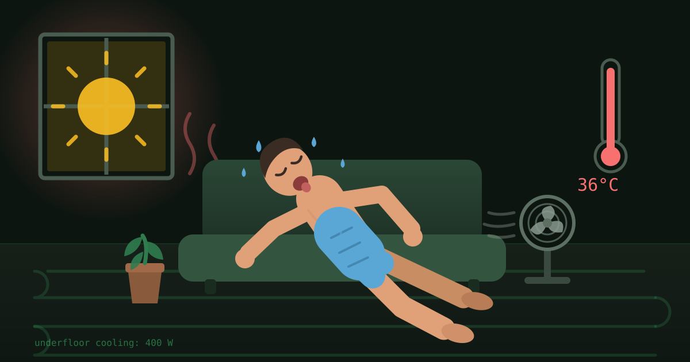

Yes — an air-to-water heat pump can cool your house, but the result depends almost entirely on what the chilled water is connected to. Fan coil units perform close to a conventional split air conditioner. Well-designed underfloor cooling delivers a real 3–5°C reduction but only about 15–25 W/m² — a quarter of what the same floor does in heating mode. Standard radiators deliver almost nothing and invite condensation. And the grant standard the whole UK market is built on explicitly says these systems "shall be designed and optimised for heating."

Britain has just had a summer that ended the argument about whether cooling matters here. The May heatwave peaked at 35.1°C at Kew Gardens on 26 May — beating a record that had stood since 1922 by two full degrees. June went further, hitting 37.7°C at Lingwood in Norfolk, and triggering red heat-health warnings on three consecutive days. As we write in mid-August, the Met Office has the country on course for its warmest summer on record, for the second year running.
So the question in every UK heat pump group this summer has been the same: I've already got an air-to-water heat pump outside — can I just make it run backwards?
Rather than guess, we asked. We put the question to a large UK heat pump owners' group: who has cooling actually set up and working on an air-to-water heat pump? The answers were more useful than a manufacturer brochure, and more honest — because they contradicted each other.
What the owners said
Five substantive replies, and they land in three distinct camps.
"Designed and installed properly, cooling from A2W is as effective as a normal split AC unit. An A2W heat pump strapped to a standard heating system and asked to provide cooling is a recipe for problems... A system using chilled water to fancoils or cassettes will provide effective operation. A system dumping chilled water into rads and UFH will provide headaches. It's that straightforward."
Respondent A — the design-purist camp
"UFH (100mm centres, tiled) works pretty well — maintained 22°C downstairs during the day. Temps started to creep up slowly in the afternoon when it was 36°C, but overnight cooled it back down to 20.5°C... You need to run it preemptively rather than turn it on when temperatures are already rising. Currently runs for 20–25 mins once an hour, tracking dewpoint with min flow temp of 15°C. Don't use it through rads upstairs as didn't seem to do much even with a desk fan blowing across it."
Respondent B — the it-works-if-you-design-it camp
"Yes. I've had condensation. There's no humidity sensor. I've now got the flow temp set to 20 degrees. It helps a bit. Definitely better than nothing when outside temperature is in the high twenties."
Respondent C — the bolted-on camp
A fourth owner, Respondent D, reported that cooling "works really well but it does have limitations" — good downstairs, but above 30°C they switch to a separate air-to-air unit upstairs where the floors are carpeted. Their monitored average cooling COP is 6.7. And Respondent E made the point that frames everything else: chilled water can technically outperform direct-expansion air conditioning, but passive systems need humidity sensors, dehumidification and fans to get there.
Notice what happened. Respondent A says chilled water into underfloor is a headache. Respondent B says theirs works well. Both are right, and the difference between them is not luck — it is 100mm pipe centres, a tiled floor, dew point tracking and preemptive operation. That is the whole article in one sentence. The rest is showing the working.
The rule nobody mentions: MCS designs for heating
Here is the structural reason so many UK installations end up in Respondent C's position rather than Respondent B's. The MCS heat pump design standard — MIS 3005-D, the document virtually every grant-funded UK heat pump is designed against — excludes cooling-only systems outright, and says this about reversible ones:
"Reversible heat pump systems able to provide both heating and cooling are included but shall be designed and optimised for heating."
MCS MIS 3005-D (2025), Heat Pump Design Standard
Read that carefully. It is not a ban on cooling. It is a statement that when the designer sizes your emitters, picks your pipe centres and sets your flow temperature, cooling performance is explicitly not what is being optimised. The same standard contains no requirement at all around condensation, dew point or moisture management in cooling mode.
So the default outcome of a standard UK £7,500-grant heat pump install is a system that is physically capable of cooling and completely undesigned for it. Which is exactly what Respondent A described.
Your heat pump may not even be allowed to cool
Cooling is usually gated in hardware and software, not just switched on. On a Vaillant aroTHERM, for example, cooling requires a coding resistor physically fitted in the unit's wiring before the option even appears in the sensoCOMFORT controller menus. Daikin Altherma, LG Therma V, NIBE and selected Mitsubishi Ecodan models support cooling on some variants and not others. Owning a "cooling-capable" model is not the same as having cooling available on your installation — check the specific model number and whether your installer enabled it at commissioning.
Problem one: the dew point ceiling
Everything difficult about air-to-water cooling comes from one number. Chill any surface below the dew point of the air touching it and water condenses out. That is not a design flaw, it is thermodynamics, and it puts a hard floor under how cold your water is allowed to be.
We calculated the dew point across the range of conditions a British living room actually experiences in a heatwave, using the Magnus-Tetens formula. This is the chart that explains Respondent C's condensation.
Figure 1 — Indoor dew point vs relative humidity, at three room temperatures. The horizontal bands show typical chilled-water flow temperatures. Any point where a line rises above a band is a condition in which water at that temperature will sweat. At a fairly ordinary 24°C and 60% RH the dew point is 15.8°C — so a 16°C flow temperature is already on the edge. Calculated by Decarbonarma using the Magnus-Tetens approximation.
Flip it round and it is starker still. For 16°C water to be safe, indoor relative humidity has to stay below 69% at 22°C, 61% at 24°C, or 54% at 26°C. British summer air after a thundery breakdown routinely blows straight past those. Published guidance puts typical UK summer dew points at 14–18°C, and recommends keeping surfaces 2–3°C above the calculated dew point as a margin.
Where the condensation actually starts
Here is the detail most articles get wrong. Your floor surface is not at flow temperature — with 16°C water and 20 W/m² coming off the slab, the surface typically sits around 19–21°C. That is usually above the dew point. So why do people find water?
Because the manifold, the pipe tails and the flow pipework are at flow temperature, not floor temperature. They are the coldest surfaces in the building, they are frequently in a cupboard or utility room with poor air movement, and on a retrofit they are very often insulated for heating — meaning insulation chosen to stop heat escaping, with no vapour-sealed barrier to stop humid air reaching the cold pipe. That is where the drips begin. Any A2W cooling retrofit that does not include closed-cell, vapour-sealed insulation on every chilled pipe run and the manifold itself is an unfinished job.
A dew point sensor — a combined temperature and humidity sensor wired into the controller, placed in a representative cooled room — is what turns this from guesswork into control. It raises the minimum flow temperature as humidity climbs and pauses cooling entirely in extreme conditions, rather than applying one crude cut-off. For underfloor cooling it is effectively non-negotiable, and several manufacturers make it a condition of installation. Respondent B has one and holds 22°C. Respondent C doesn't, and has retreated to a 20°C flow temperature that "helps a bit."
Problem two: there isn't much cooling in a floor
Even with the condensation solved, underfloor cooling runs into a capacity wall. The same slab that happily delivers 80–100 W/m² in heating mode manages only 15–25 W/m² in cooling, rising to perhaps 40 W/m² in genuinely dry air with low flow temperatures. The reason is the dew point ceiling above: in heating you can push a 20°C room to a 28°C floor, a 8°C driving difference. In cooling you can only pull it down to about 20°C, a 4°C difference — and the physics of natural convection is unhelpfully asymmetric, because cold air pools at the floor instead of rising off it.
So we modelled a real room against a real August afternoon.
Figure 2 — Cooling supply vs demand, 20 m² living room, hot afternoon. Green bars are what each emitter type can deliver into that room; the amber bar is a realistic heat gain on a 32°C afternoon (unshaded 3 m² south-west window 600 W, two occupants 150 W, electronics 120 W, fabric and ventilation gain 250 W). Underfloor cooling covers roughly a third to a half of it. A single fan coil covers all of it. Radiators are a rounding error. Supply figures from published underfloor cooling output ranges; gains modelled by Decarbonarma.
This is precisely Respondent B's experience, quantified. Their downstairs held 22°C most of the day and only "started to creep up slowly in the afternoon when it was 36°C" — the point at which gains overtook the slab's ~400 W. And it recovered overnight, because once the sun is off the glass the gain collapses to a couple of hundred watts and the floor is comfortably ahead again.
It also explains why they run it preemptively. A floor slab is a huge thermal store with hours of lag. You cannot ask it for a rapid save at 3pm; you have to have been quietly chilling it since breakfast. Underfloor cooling is a thermal-mass strategy, not a thermostat. The same property that makes underfloor heating so forgiving in winter makes underfloor cooling useless as a panic button.
Why radiators do nothing
Both Respondent B and the group consensus are blunt on this, and the physics agrees. A radiator in heating mode works mostly by convection: warm surfaces heat air, the air rises, and a stack effect pulls more cold air in at the bottom. Run the same radiator cold and you kill the engine — cold air produced at the radiator sinks and puddles on the floor instead of circulating. Respondent B tried a desk fan across an upstairs radiator and it "didn't seem to do much."
You also lose the emitter area. A radiator sized for a 30–35°C driving temperature difference in heating has, at best, a 5–6°C difference in cooling. That is roughly a sixfold cut in output before you account for the dead convection. Add that a radiator has no condensate tray, no drain, and sits on a plastered wall or wooden floor, and it is the one configuration everyone we asked agreed to avoid.
Fan coils: the version that actually behaves like air-con
A fan coil unit is a chilled-water coil with a fan behind it and a condensate tray under it. That third component is the whole story. Because it collects and drains condensate by design, a fan coil is allowed to run water below the room dew point — which means it does what nothing else in this article does: it dehumidifies.
That matters more than the raw degrees. Underfloor and radiant cooling provide sensible cooling only — they lower air temperature and leave the moisture exactly where it was, so relative humidity actually rises as the room cools. A 22°C room at 70% RH feels clammy in a way a 24°C room at 50% RH does not. This is why Respondent E's comment about needing "humidity sensors, dehumidification system plus fans" is the sharpest observation in the thread: a passive system that only removes heat is solving half the comfort problem.
| Emitter | Output | Dehumidifies? | Condensation risk | Verdict |
|---|---|---|---|---|
| Fan coils / cassettes | 1–4 kW per unit | Yes — has a drain | Managed by design | Works |
| UFH, cooling-designed ≤150mm centres, tile, dew point sensor | 15–25 W/m² | No | Controllable | Works, limited |
| UFH, heating-designed 225mm centres, carpet, no sensor | <10 W/m² | No | High — unmanaged | Marginal |
| Radiators | Negligible | No | High, on walls/floors | Don't |
| Air-to-air (separate) | 2–5 kW per head | Yes | Managed by design | Works |
Fan coil units typically cost £500–£1,000 each before installation, plus chilled pipework, insulation, power and a condensate drain to each unit. That is the honest price of "as effective as a normal split AC unit."
The efficiency surprise: it can be brilliant
Here is where air-to-water cooling gets genuinely interesting, and where it beats air conditioning on its own terms. Respondent D's monitored cooling COP of 6.7 is not a typo and not a fluke — it is a direct consequence of the dew point ceiling. Because you are forced to make 16–20°C water rather than the 5–7°C a conventional chiller makes, the compressor is doing far less work. The constraint that limits your capacity is the same constraint that makes you efficient.
Monitoring data from a UK owner running a Grant R290 unit into three floors of underfloor makes the trade-off explicit. Dropping the chilled water target from 18°C to 16°C raised cooling output from 2.7 kW to 3.8 kW — but pushed electrical input from 430 W to 800 W. Do the arithmetic:
That is the dial you are actually turning when you drop the flow temperature: you buy capacity with efficiency, and with condensation margin. For comparison, a typical domestic split air conditioner runs a seasonal efficiency in the region of 4–7 depending on class and conditions — so a well-tuned air-to-water system at high flow temperature is genuinely competitive, it just cannot deliver anything like the same peak kilowatts.
And in a solar house it is close to free. Cooling demand and peak generation land at the same hour of the same day. We make this point about air-to-air in our British summer air-con analysis, and it applies identically here: on a bright August afternoon the cooling is running on generation that would otherwise be clipped at the export limit and never produced at all.
One thing your heat pump cannot do while cooling
It cannot make hot water at the same time. A single-compressor air-to-water unit in cooling mode has to switch back to heating to charge the cylinder, which means the house warms slightly on every DHW cycle. In a heatwave that argues for shifting your cylinder reheat to the small hours and letting the machine cool uninterrupted through the day — or, if you have one, letting a separate store carry the hot water load entirely.
Where air-to-air comes in — and why two of our five owners already have it
The most telling pattern in the responses is that the two owners with the best-working underfloor cooling both also run air-to-air upstairs. Respondent B uses a portable air conditioner in the upstairs hallway and says they "would still consider a second air to air unit for upstairs" to cut the noise. Respondent D uses air-to-air upstairs above 30°C, "where the floors are carpeted."
They arrived there independently, for the same two reasons. First, upstairs is where UK homes overheat — hot air stratifies, roofs gain heat all day, and bedrooms matter most because sleep is what heat actually costs you. Second, upstairs floors in British houses are carpeted and timber. Carpet above about 2.5 TOG blunts underfloor cooling to the point of being barely noticeable, and suspended timber floors have a fraction of the thermal contact of a screed. There is no underfloor cooling fix for a carpeted first floor.
Air-to-air units solve exactly that: they are fast, they dehumidify, they are zonal, and they cool the rooms underfloor cannot reach. That is the setup we run at Decarbonarma HQ — a Daikin multi-split covering the three main living spaces, which you can read about in our A2A plus Sunamp case study. It is also the honest reason we chose it: an air-to-water quote for our house came in at £27,000 before grant, against roughly £10,000 for air-to-air plus a heat battery — and the air-to-air cools as standard rather than as a retrofit project.
The grant picture is shifting here too. The Boiler Upgrade Scheme regulations that came into force on 28 April 2026 introduced a £2,500 grant for air-to-air heat pumps alongside the £7,500 for air-to-water (and £9,000 for homes coming off oil or LPG from 21 July 2026), and extended the scheme to 2030. One important caveat: air-to-air is not claimable yet. MCS published the updated standards in December 2025 but installers cannot certify air-to-air installations until certification bodies complete UKAS accreditation. If you are weighing an air-to-air purchase, that timing is worth watching. See our UK grants guide for the current state of play.
If you want A2W cooling that works: the checklist
Distilling everything above, and everything our respondents learned the hard way:
- Check the unit is cooling-capable and enabled. Model-specific. May need a coding resistor and a commissioning menu change by an approved installer.
- Fit fan coils where you need real capacity. They are the only option in this article that dehumidifies, and the only one that responds in minutes. Budget £500–£1,000 per unit plus pipework, power and a condensate drain.
- For underfloor, design it as cooling from the start. 150mm centres or tighter (one respondent runs 100mm), pipes 40–50mm below the surface, hard floor coverings, and carpet kept below 1.5–2.5 TOG.
- Fit a dew point sensor and configure it. A sensor that is wired in but never given limits protects nothing — this is one of the most common oversights in UK cooling commissioning.
- Insulate chilled pipework and the manifold with closed-cell, vapour-sealed insulation. Not heating-grade lagging. This is where condensation appears first.
- Run it preemptively and continuously. Respondent B's 20–25 minutes per hour from morning beats a full-power panic at 3pm, and cycles the compressor less.
- Leave the radiators out of it. Fit isolating valves so the cooling circuit serves only the underfloor and fan coils.
- Watch your floor finish. One monitored owner found anything below 16°C flow started making Amtico shrink. Check what your manufacturer permits.
- Deal with humidity separately. MVHR helps significantly — one system running 14.5°C flow reports no condensation issues at all and credits its MVHR. A standalone dehumidifier works but adds heat back into the room.
- Plan for upstairs. If your first floor is carpeted, budget for air-to-air or accept that the bedrooms stay hot.
The bottom line
Respondent A was right and Respondent B was right, which is the most useful thing this exercise produced. "As effective as a normal split AC unit" and "a recipe for problems" are both true statements about air-to-water cooling — they just describe two different jobs of work.
If you are designing a new system now and you want cooling, specify it now: fan coils where you need punch, tight-centre underfloor over a hard floor for background, a dew point sensor, and vapour-sealed pipework. Done that way it is efficient, near-silent, and cheaper to run than air conditioning — a COP above 6 is not available from any split unit on the market.
If you have an existing MCS-designed heat pump and you are wondering whether to switch cooling on, be realistic about what you are getting. Your system was, by the letter of the standard it was designed to, optimised for heating. Cooling into a heating-designed floor at a safe 20°C flow will take the edge off — Respondent C's "definitely better than nothing" is an accurate review. It will not rescue a bedroom at 2am in a heatwave. For that, the answer in almost every UK house is still a separate air-to-air unit, and this summer's temperature records suggest that is a conversation more of us are going to be having.